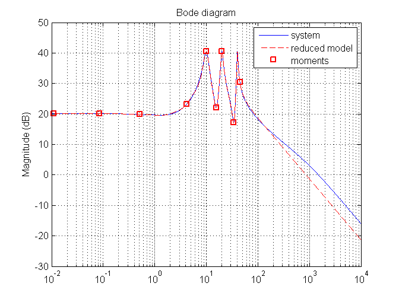
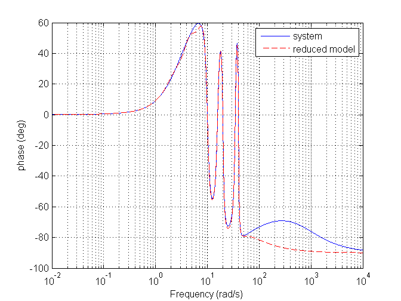
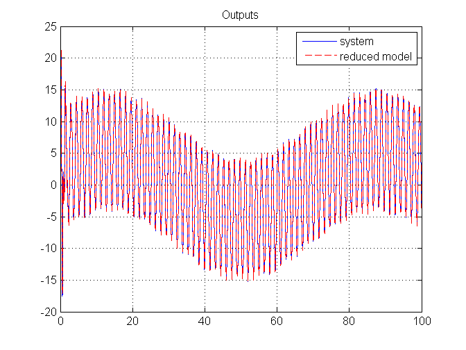
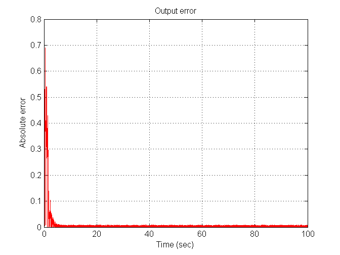
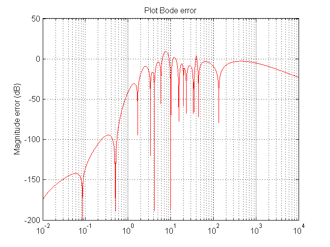
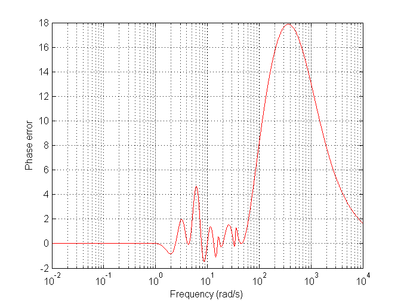

Contents
clear all
close all
clc
data systems
load('new_data.mat');
T=100;
n = max(size(A));
v = max(size(S));
omega=logspace(-2,4,40000);
sys = ss(A,B,C,D);
sig_gen = ss(S,[],L,0);
building reduced model
Left= kron(eye(v),A)-kron(S',eye(n));
Right=reshape(-B*L,n*v,1);
PI=reshape(Left\Right,n,v);
eigen = eig(A);
[~,ind] = sort(abs(imag(eigen)),'descend');
eig_des = eigen(ind(1:v));
delta = place(S',L',eig_des)';
F = S - delta*L;
G = delta;
H = C*PI;
red_mod = ss(F,G,H,0);
Warning: Achieved pole locations differ by more than 10 percent from specified
locations.
retrieving comparison data
[wn,~] = damp(sig_gen);
abs_fre = abs(freqresp(sys,wn));
db = mag2db(abs_fre);
[mag_sys,phase_sys]=bode(sys,omega);
int_sys = ss([],[],[],0);
int_sys.a = [sig_gen.a, zeros(v,n);
sys.b*sig_gen.c, sys.a];
int_sys.c = [zeros(1,v), sys.c];
[y_sys,t_sys,~] = initial(int_sys, [w0; x0], T);
[mag_red_mod,phase_red_mod] = bode(red_mod,omega);
int_red_mod = ss([],[],[],0);
int_red_mod.a = [sig_gen.a, zeros(v,v);
red_mod.b*sig_gen.c, red_mod.a];
int_red_mod.c = [zeros(1,v), red_mod.c];
err = abs(mag_sys - mag_red_mod);
error_db = mag2db(err);
error_phase = phase_sys - phase_red_mod;
xi0 = zeros(v,1);
[y_red_mod,t_red_mod,~]=initial(int_red_mod, [w0; xi0], T);
plotting results
figure(1)
semilogx(omega,mag2db(mag_sys(1,:)));
hold on;
semilogx(omega,mag2db(mag_red_mod(1,:)),'r--');
plot(wn(:,1),db(1,:),'rs','LineWidth',1.5)
grid on;
legend('system','reduced model','moments')
ylabel('Magnitude (dB)')
title('Bode diagram')
figure(2)
semilogx(omega,phase_sys(1,:));
hold on;
semilogx(omega,phase_red_mod(1,:),'r--');
grid on;
legend('system','reduced model')
ylabel('phase (deg)')
xlabel('Frequency (rad/s)')
figure(3)
plot(t_sys,y_sys);
hold on;
plot(t_red_mod,y_red_mod,'r--');
grid on;
legend('system','reduced model')
xlim([0, T]);
title('Outputs')
figure(4)
T = unique([t_sys; t_red_mod]);
y_sys_interp =interp1(t_sys, y_sys, T);
y_red_mod_interp =interp1(t_red_mod, y_red_mod, T);
sim_err = plot(T, abs(y_sys_interp - y_red_mod_interp),'r');
hold on;
grid on;
xlabel('Time (sec)');
ylabel('Absolute error')
title('Output error')
figure(5)
semilogx(omega,error_db(1,:),'r')
hold on;
grid on;
title('Plot Bode error')
ylabel('Magnitude error (dB)')
figure(6)
semilogx(omega,error_phase(1,:),'r')
hold on;
grid on;
ylabel('Phase error')
xlabel('Frequency (rad/s)');
     